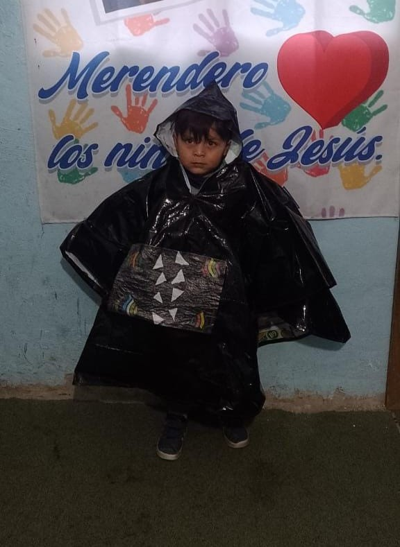

Nuestros objetivos
Misión
Somos una organización sin fines de lucro que, desde 2023, trabajamos para resolver los problemas que afectan la vida de las familias que se encuentran en situación de pobreza extrema y estructural en la Argentina
Porque entendemos que la realidad hay que transformarla desde adentro, formamos equipos multidisciplinarios de profesionales que viven y trabajan diariamente en barrios periféricos y asentamientos en las provincias de Buenos Aires.
Implementamos programas para proteger la primera infancia, combatir la desnutrición, capacitar a voluntarios y personal, desarrollamos actividades educativas y recursos didácticos para promover hábitos de alimentación y de vida saludable. fortalecer la economía social e integrar a las familias al sistema público-privado, trabajando activamente en la restitución del derecho a una Alimentación Adecuada, la identidad y educación.

Orientados a la sostenibilidad
La formación, desarrollo y fortalecimiento de las capacidades locales a fin de asumir eficiente y eficazmente el liderazgo y la apropiación de los procesos de desarrollo, es fundamental para asegurar la sostenibilidad del proyecto una vez concluido el apoyo externo.
Visión
Queremos salir siempre al encuentro de las familias más vulnerables y ser un espacio de escucha atenta para recibir con respeto sus necesidades. Creemos en un mundo donde cada niño cuente con una nutrición adecuada para desarrollarse sanamente y donde cada persona pueda ejercer plenamente sus derechos y desplegar al máximo sus capacidades.
Aspiramos a ser una organización que está enfocada en la temática del hambre, la nutrición y la inseguridad alimentaria, para llegar con más alimentos a más personas que sufren hambre, incorporando más organizaciones comunitarias en los espacios más vulnerables, actualmente solo trabajamos en los barrios de la provincia de Buenos Aires pero aspiramos a llegar a todas las provincias de el país donde más nos necesiten “alimentando corazones, un plato a la vez “.